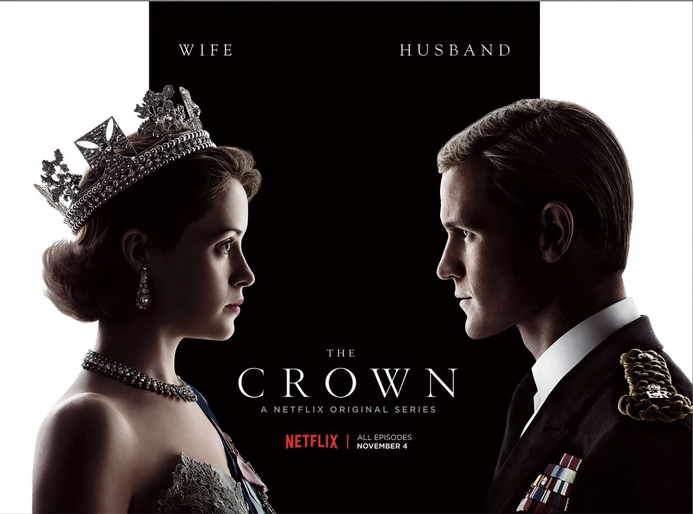

The Crown
The Crown is a historical drama series that brilliantly chronicles the reign of Queen Elizabeth II, offering a deep and dramatic insight into the British royal family and their struggles behind palace walls. With each season covering a different decade, the show explores political events, personal relationships, and the burden of duty with rich storytelling and exceptional performances. The production quality is top-notch, with elegant costumes, grand set designs, and a gripping screenplay. *The Crown* is not just a biography—it’s a compelling reflection on power, tradition, and the personal costs of leadership, making it a must-watch for fans of history and drama.